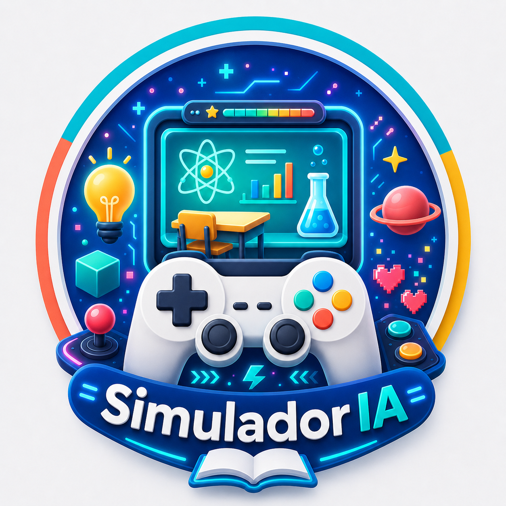

🎮 Recurso digital para docentes
ProgramIA
Simuladores Educativos
Crea simuladores interactivos tipo juego digital para cualquier tema, grado o materia. Escribe tu idea, copia el prompt y ábrelo en el GPT.
¿Qué simulador quieres crear?
Al dar clic se copiará la solicitud y se abrirá tu GPT. Solo pega el texto en ChatGPT.
Aquí aparecerá el prompt preparado.
🧩 Interactivo
Botones, retos, misiones, preguntas, fichas, líneas de tiempo y juegos.
📱 Adaptable
Diseñado para celular, computadora, tablet y proyector.
⬇️ Descargable
El GPT genera un archivo HTML listo para abrir con doble clic.